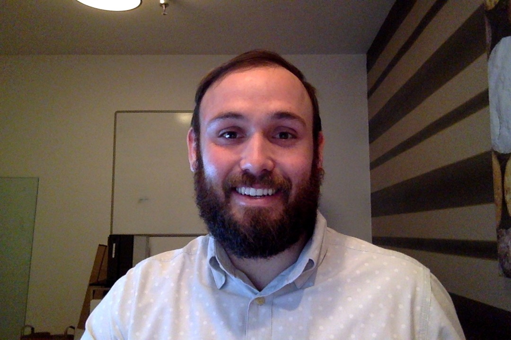

About Me
Hi, my name is Casey Holston. I was born and raised in the Kansas City, Missouri area. My wife and I moved to the Savannah area in May of 2014 and I wish we would have moved to the South sooner. I am happily married with a young daughter and two cats and one dog. Needless to say, we have a full house.
I have been working in Internet related areas for the last 10 years and it has been amazing to see how quickly things change. I enjoy learning new things and the Internet never disappoints. I can't wait to see where it goes in the next ten years.
Connect With Me